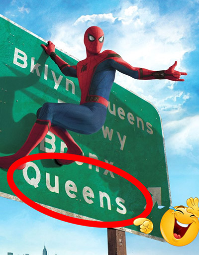

Welcome to Queens
Queens is the easternmost of the five boroughs of New York City, the largest in area, and the second-largest in population. The borough of Queens has been coterminous with Queens County since 1899. The county is now the second most populous county in New York State (behind neighboring Kings County [the borough of Brooklyn]), as well as the fourth-most densely populated county in the United States. Queens (and Brooklyn) sit on the west end of geographic Long Island. Queens is the most ethnically diverse urban area in the world with a population of over 2.2 million, 48% of whom are foreign-born, representing over 100 different nations and speaking over 138 different languages.
If each New York City borough were an independent city, Queens would be America's fourth most populous city, after Los Angeles, Chicago, and Brooklyn. Queens has the second-largest and most diversified economy of all the five boroughs of New York City.
The differing character in the neighborhoods of Queens is reflected by its diverse housing stock ranging from high-density apartment buildings, especially prominent in the more urban areas of central and western Queens, such as Astoria, Long Island City, and Ridgewood, to large free-standing single-family homes, common in the eastern part of the borough, in neighborhoods that have a more suburban layout like neighboring Nassau County, such as Little Neck, Douglaston, and Bayside.
Queens is home to two of the three major New York City area airports (and both major airports in New York City proper), JFK International Airport and LaGuardia Airport. These airports are among the busiest in the world, causing the airspace above Queens to be the most congested in the country. Attractions in Queens include Flushing Meadows Park—home to the New York Mets baseball team and the US Open tennis tournament—Kaufman Astoria Studios, Silver Cup Studios, and Aqueduct Racetrack.